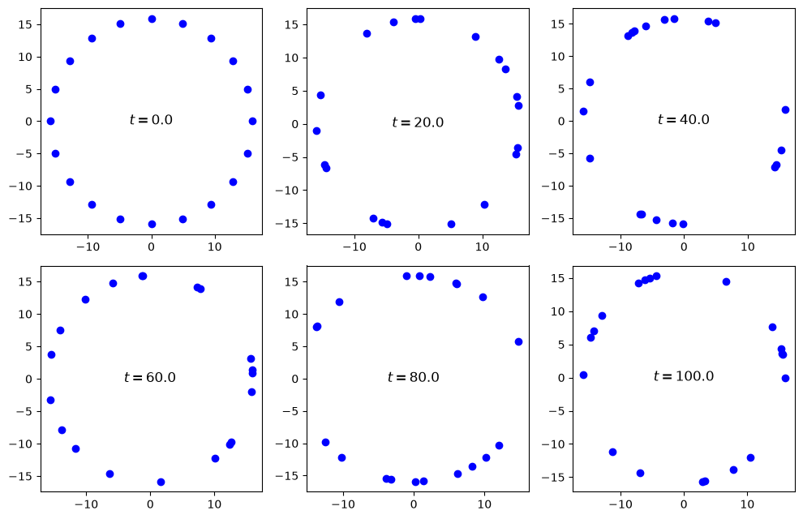

- Generated by
 1.18.0
1.18.0
|
NDXL v1.0.0
|
Delay differential equations (DDEs) are characterised by delayed (historical) states influencing the current state of an agent, written as
\[ \frac{d\vec{Y}}{dt} = \vec{F}(\vec{Y}(t),~\vec{Y}(t-\vec{\tau}_1),~\vec{Y}(t-\vec{\tau}_2),~\dots~\vec{Y}(t-\vec{\tau}_n),~t), \]
where the \(\tau_i\) are the delay terms. Since ODE systems are only defined for \(t\ge t_0\) (with \(t_0=0\) in NDXL), one inevitably encounters the situation where \(t-\tau<t_0\). This is solved by use of a history function, which is a special function in DDEs defined for the interval \(t_0-\tau\) that returns the historical states over that time period i.e., "what was the system doing before we started modelling/tracking it?"
In NDXL, delays have a physical interpretation as being the time taken for information to travel from vertex \(i\) to \(j\) along edge \(ij\) i.e., the stage state is only delayed because the edge propagates that information at a finite speed. This interpretation has several important implications:
The first inference means that only vertex dynamics, never edge dynamics, can be described by DDEs in NDXL, and vertex \(i\) can only ever depend on the delayed state of vertex \(j\); for vertex \(i\) to depend on its own delayed state, vertex \(i\) and vertex \(j\) must be the same vertex i.e., a self-coupled node. For vertex \(i\) to be affected by multiple delayed terms from vertex \(j\), mutliple edges \(ij\) must exist, each with its own unique delay. The second inference implies that the history function for vertices is \(\vec{x}_0\), and for edges is \(\vec{0}\), for \(t<\tau\); this is what the functions ndxlGetVertexNeighbourState() ndxlGetEdgeRelativeState() do, and is why they should almost always be used over retrieving agent states directly. The third inference is more of a concern for memory management, where an indefinite number of historical states cannot be stored on a finite amount of memory, meaning NDXL only preserves historical states up to \(t-\tau_{ij}\). Historical states are further used to perform a cubic hermite interpolation when \(t-\tau_{ij}\) does not correspond directly to a discrete stored state (we opted for cubic hermite interpolation due to its curvature preservation properties).
We consider a delayed optimal velocity model (OVM) with \(20\) cars travelling in a circle, where the position \(x\) and velocity \(v\) of car \(i\) are given by the already-deconstructed second-order ODE
\[ \frac{dx_i}{dt} = v_i, \]
\[ \frac{dv_i}{dt} = a_i\left[V\left(\Delta x_i(t-\tau_{ii})\right) - v_i\right]. \]
The delays here refer to the drivers' reaction times, and the optimal velocity function \(V\) typically takes on a sigmoid curve such as
\[ V\left(\Delta x\right) = v_{max}\frac{\tanh{(\Delta x - d)} + \tanh{(d)}}{1 + \tanh{(d)}}, \]
where \(\Delta x(t-\tau_{ij})\) is the distance between cars \(i\) and \(j\), \(\tau_{ij}\) time ago.
We see that each car (vertex) depends on a delayed state from the car in front of it, and of itself. Furthermore, each car is not influenced by the car behind it; our network therefore consists of vertices each with a directed edge to the vertex "behind" it, and a directed edge to itself (it is usually a good idea to make self-loops directed to avoid duplicate state storage and wasted memory). We define the car dynamics function with this structure in mind, remembering also that the order in which edges are added is preserved. In our dynamics function, we therefore query each edge for its neighbouring vertex, and query the network for common parameters like \(v_{max}\).
Over in main(), we will create our cars and the edges between them, baring in mind that directed edges allow information to travel from its source vertex to its destination vertex, but not the other way around. The order in which we specify the vertices in the edge constructor therefore becomes important, although their states can still be left as NULL.
Since the governing equation is fundamentally second-order, we will use the static Nyström method to simulate the network, as it is better suited than the static Ralston method to second-order equations. Outputs are plotted on a circle with circumference \(100\) as that ringlike structure is how we defined our network in the first place.
